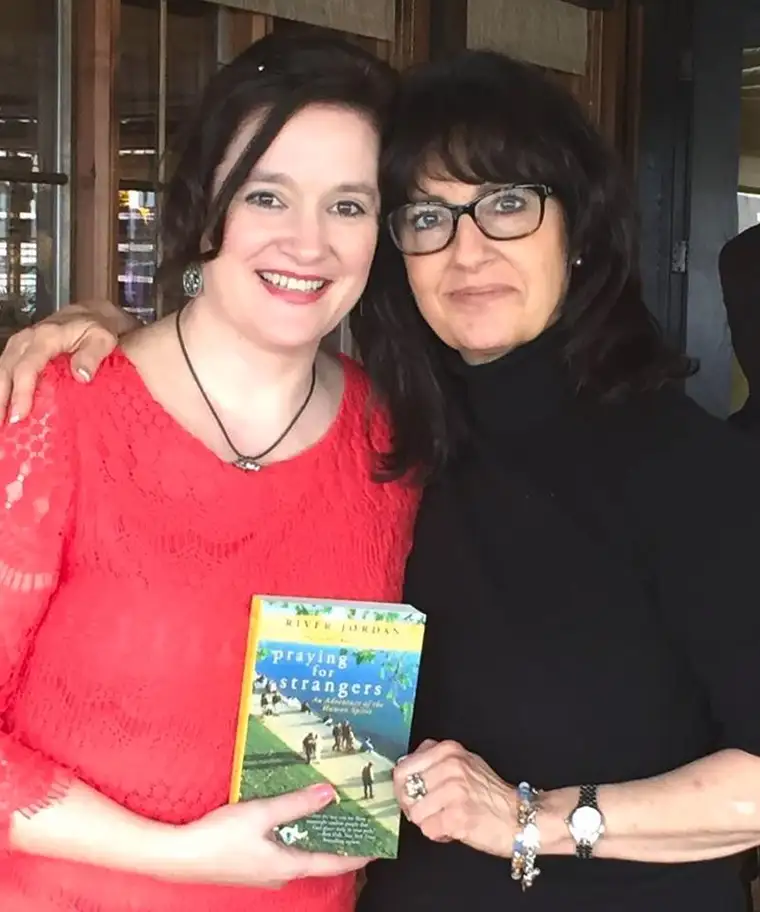

Back in April, I was asked to read a Scripture passage at a fundraising breakfast for the New Life Center for the homeless and hurting in our community.
Accepting this small role put me at the head table, along with other contributors and the keynote speaker, Southern novelist River Jordan.

Among River’s titles is the nonfiction national bestseller “Praying for Strangers: An Adventure of the Human Spirit.”
River explained how this whole project transpired; how her two sons were preparing for overseas military duties, and rather than lose her mind in worry, she decided to refocus. So for her New Year’s resolution in 2009, she committed to praying for a stranger daily for one year.
But not just any stranger, as it turned out. These weren’t undefined characters borne in her imagination, but real people she’d meet in the course of her day.
Early in the book, she muses, “I wonder what my life would look like if I lived this way, walking and breathing out prayers. Blessings and peace and prayers and wondering and miracles for all that I encounter. I wonder what the city would be like if we all did that, if the world was one big cup of prayer, for one day. Only one day, I wonder.”
Soon into the project, River found herself not just praying for strangers but telling them she was doing so. She’d discovered by a fluke that it seemed to matter that they knew about her prayers.
From there, everything changed. Through her verbal prayer-offerings, connections began happening that affected not only the lives of the recipients, but her own. Her interior transformation compelled River to keep going after the 365 days ended. She still prays daily for a stranger.
During her Fargo visit, as I listened to River share about her encounters, I was absorbed. River observed how some people’s whole demeanor would change upon learning they were the subject of prayers — and usually in a positive, you-have-no-idea-how-much-this-means kind of way.
She told of a young, sparkly cashier who, after learning she was River’s “stranger” and being prayed for, had to be taken off her shift — so moved she was by the utterance, so in need of those prayers that she had to pause to compose herself.
I nodded, tears trickling down. I knew that girl, the one who looked so perfect but was hurting inside.
River’s experiment had unexpectedly revealed our human need to know others are thinking of us and not only that, but praying for us. It also uncovered the reality that some of the people who seem to have it all together are the most desperate for prayer.
Just a few days before River’s arrival, I’d been spending a lot of time with someone dear who’d been struggling. When I heard her humming a song another room away, I drew my own, hopeful conclusions.
“I heard you singing.” I told her later. “Things must be looking up!”
“Not really,” she replied. “I’m singing because I’m afraid if I don’t, I’ll stop breathing.”
How elusive the exterior can be.
Like River, I’ve also discovered, just as accidentally as she had, the reality of offered prayer as a yearned-for gift. Throughout the past several years, I’ve reached out either in person or through social media with offers to pray for those in my life needing a spiritual lift.
The profound receptivity has surprised and moved me. The willingness of others to bear their secret heartaches to me just from my asking has shown me the depths of the human heart’s longings and left me humbled.
I’ve come to view these petitions to God as flowers in a spiritual bouquet of love. And I know they’re being received.
When we offer to pray for others, a floodgate of need opens. And so I’ve come to conclude, like River, that praying for others, strangers or friends, is one of the most valuable things we can offer each other.
Before River left town, I had a chance to talk with her for a few moments during a private lunch at a local restaurant. Quietly, I shared how her stories had touched me and why. She looked at me intently, then promised to pray for me. I knew she would.
For everything, there is a season, including a time to pray for others and a time to be prayed for, and sometimes, both in the same day.
As River had discovered, praying for others can take us out of ourselves in an unexpected way, connecting us powerfully, tenderly, with the rest of humanity.
Our world thirsts for prayer.
“How much does it really take for any of us to slow down to attune ourselves to the human condition, to look for another soul passing through our little universe that might need a word of encouragement?” River asks. “If only we knew how important we are to each other. Even as — particularly as — strangers.”
I have prayed for many readers through the years of writing this column, and I want to extend that once more, now. Most of us are strangers to one another, and yet I am honored to pray for you. And if you don’t mind, might I ask in turn that you would pray for me?
[For the sake of having a repository for my newspaper columns and articles, I reprint them here, with permission, a week after their run date. The preceding ran in The Forum newspaper on June 25, 2016.]